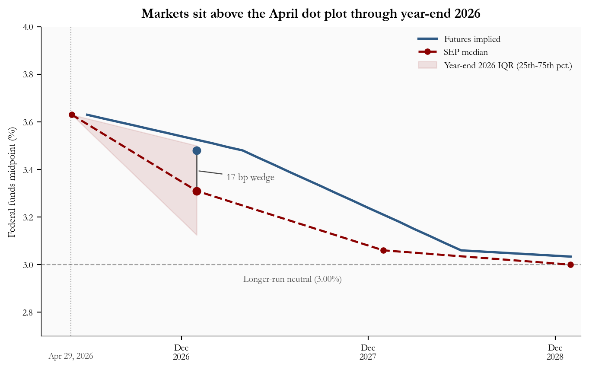
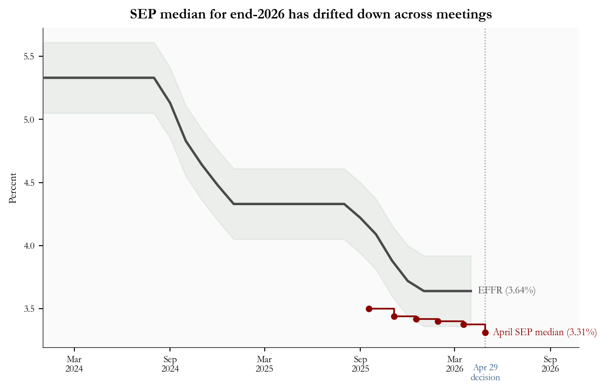
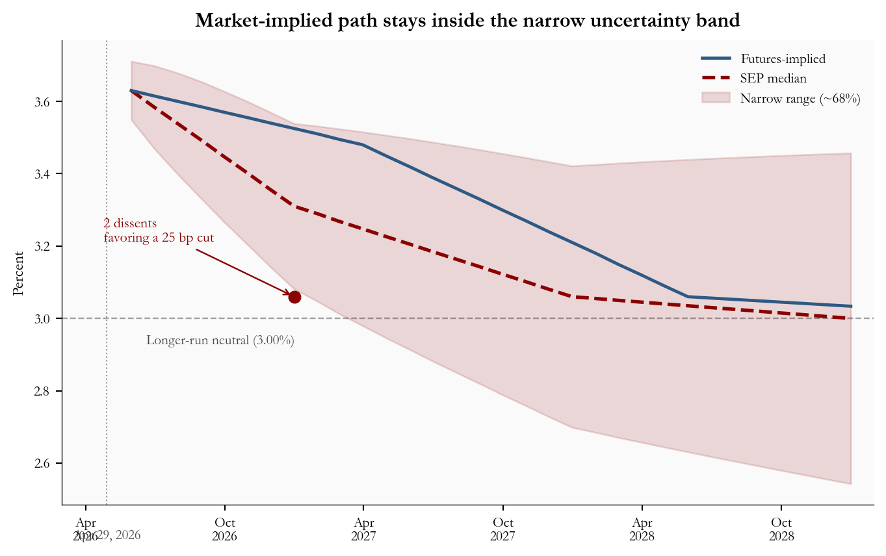
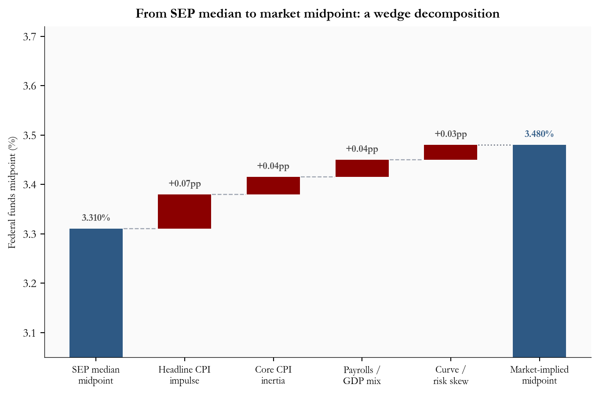
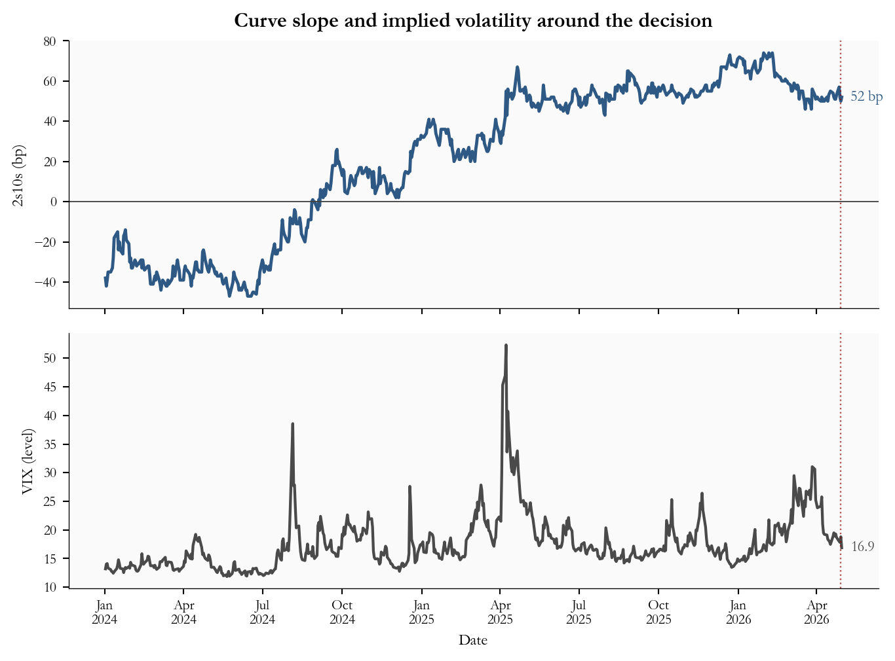

April 2026 FOMC: Dissents, Dots & a Widening Wedge
Author
Yoram Gilboa
Published
May 1, 2026
Executive summary
The Federal Open Market Committee held the federal funds target range at 3.50-3.75% on April 29, 2026 and recorded 2 dissents favoring a 25 bp cut. The Summary of Economic Projections (SEP) nudged the year-end 2026 median midpoint down to 3.31% from 3.38% in March. Markets price the same horizon near 3.48%. That 17-basis-point wedge has widened since the pre-meeting snapshot one week earlier - the clearest signal that the dot plot is delivering more easing than markets are pricing.
NoteNote on data
SEP median midpoints, interquartile bands, dissent counts, and interpolated futures midpoint waypoints come from published FOMC materials and contemporaneous market snapshots as of May 1, 2026, summarized for this post. Monthly effective federal funds rates, Treasury yields, and the VIX are pulled from FRED series FEDFUNDS, DGS2, DGS10, and VIXCLS, retrieved with fredapi when FRED_API_KEY is set, otherwise via the FRED graph CSV export. This post does not reconstruct security-by-security futures positions; the interpolated path is for exposition only.
Target range
3.50-3.75%
Hold; unchanged from March
Dissents
2
favored a 25 bp cut
SEP median, EOY 2026
3.31%
vs. 3.38% in March
Wedge vs. market, EOY 2026
17 bp
market at 3.48%; ~13 bp pre-meeting
FOMC SEP and statement, April 29, 2026 | Wedge: SEP median midpoint vs. interpolated futures midpoint, May 1, 2026
1. The April Decision in Context
How the Federal Open Market Committee works
The Federal Open Market Committee (FOMC) is the body of the US Federal Reserve that sets the country’s interest rate policy. It has 19 participants: the seven members of the Board of Governors and the 12 presidents of the regional Federal Reserve Banks. Of these, 12 vote at any given meeting (all seven governors, the New York Fed president, and four of the remaining eleven regional bank presidents on a rotating basis). Congress gave the Fed a dual mandate of maximum employment and stable prices, and the FOMC’s primary tool for pursuing both is the federal funds rate, the overnight rate at which banks lend to each other. The Fed steers that rate by setting a quarter-point-wide “target range”; everything else (mortgage rates, auto loans, business credit, the dollar) ultimately reacts to where that range sits and where it is heading. See the Federal Reserve’s FOMC structure overview for the formal rules.
The April 2026 decision
On April 29, 2026 the FOMC voted to hold the federal funds target range at 3.50-3.75%. Two participants dissented in favor of a 25 basis point decrease in the target range for the federal funds rate. None dissented in the other direction. The asymmetry matters: the committee’s central case did not shift, but the visible dispersion is entirely on the dovish (more cuts) side.
What the dot plot shows
Each FOMC meeting that ends in March, June, September, or December includes the Summary of Economic Projections (SEP), in which all 19 participants submit anonymous forecasts of where they think the federal funds rate should be at the end of the next three years and over the longer run. Those individual forecasts are plotted as dots and called the “dot plot.” This post focuses on the median dot - the middle value when the 19 forecasts are sorted from low to high. To translate the target range into a single number, the median is reported as the midpoint of each participant’s preferred range (the midpoint of 3.50-3.75%, for example, is 3.62%). The April SEP put that median at 3.31% for end-2026, 7 basis points lower than the March vintage of 3.38%. The longer-run neutral midpoint - the level at which the committee believes policy is neither restrictive nor stimulative - is unchanged at 3.00%.
How markets price the same path
Bond and futures markets price the same horizon every minute of every trading day. The cleanest source for that pricing is the federal funds futures market, where contracts settle on the average effective federal funds rate over a given month. Interpolating those contract prices forward yields a “market-implied path” for the federal funds rate. As of May 1, 2026, that path puts the end-2026 midpoint near 3.48%, about 17 basis points above the SEP median dot. The two paths differ for two structural reasons: the SEP is a central case from policymakers conditioned on their own forecasts, while market pricing is a probability-weighted average over many possible outcomes (including ones where the FOMC ends up tighter than its current plan). Markets can sit above the median dot for long stretches without rejecting the Fed’s baseline, and they have done so since early 2026.
The macro backdrop
The macro picture was mixed rather than directional. March headline CPI jumped +0.9% month over month on an energy spike, while core CPI (excluding food and energy) rose a contained +0.2%. Payrolls added 178,000 jobs and unemployment was steady at 4.3%, and the advance estimate of Q1 GDP came in at 2.0% annualized. None of those prints individually called for an immediate cut, but together they were consistent with a modest downward SEP shift and the dovish dispersion in the dissents.
2. Dot Plot vs. Market Path
The April Summary of Economic Projections (SEP) did not close the gap with markets. The federal funds futures midpoint for year-end 2026 sits at 3.48%, about 17 basis points above the median dot and roughly 4 basis points wider than the pre-meeting wedge. The shaded band in Figure 1 is the interquartile range (IQR) of the year-end 2026 dot distribution, the gap between the 25th and 75th percentile of FOMC participant projections; it captures where the middle half of the committee sees end-2026 rates.
Show code
# =============================================================================# FIGURE 1: SEP MEDIAN PATH VS. MARKET-IMPLIED PATH# Tells the story of the wedge in a single chart:# - Dashed red dots-and-line: the FOMC's own median forecast (the dot plot).# - Solid blue line: where federal funds futures price the same horizon.# - Red shaded band: the interquartile range (middle 50%) of FOMC dots# for year-end 2026 only; the data published with the SEP only gives a# real IQR for the nearest year-end, so we draw the band only there.# =============================================================================# Build the path that connects "today" to each year-end median dot.# We need three lists: x-values (dates), y-values (median rate), and the# IQR endpoints. Putting the current EFFR as the leftmost point makes the# line start where realized rates are right now.dot_x = [current_date] +list(dot_dates_eoy)dot_y_med = [current_effr] +list(dot_median)# IQR shading: ONLY published for end-2026, so we shade just that segment.# The polygon goes (current date, EFFR) -> (year-end 2026, IQR low) -># (year-end 2026, IQR high) -> back to (current date, EFFR), giving a wedge# that opens toward year-end 2026 where the dot dispersion lives.iqr_x = [current_date, dot_dates_eoy[0]]iqr_lo = [current_effr, stats["dot_iqr_lo_2026"]]iqr_hi = [current_effr, stats["dot_iqr_hi_2026"]]# figsize controls width and height in inches; 7.2 wide keeps the chart# inside the blog's content column.fig, ax = plt.subplots(figsize=(7.2, 4.6))# Shaded IQR band (only through year-end 2026). alpha = transparency.ax.fill_between(iqr_x, iqr_lo, iqr_hi, color=COLORS["accent"], alpha=0.10, zorder=1, label="Year-end 2026 IQR (25th-75th pct.)")# Federal funds futures-implied path (a smooth interpolation, not raw# contract prices) - solid blue line, drawn under the dotted SEP line.ax.plot(mkt_dates, mkt_rates, color=COLORS["primary"], lw=2.0, zorder=3, label="Futures-implied")# SEP median path - dashed red line with circle markers at year-ends.ax.plot(dot_x, dot_y_med, "--o", color=COLORS["accent"], lw=1.8, ms=4.5, zorder=4, label="SEP median")# Longer-run neutral reference line. Place the label just below the dotted# line and to the left of where the SEP and futures paths converge toward# 3.0% by 2028, so it stays clearly separated from the thicker path lines.ax.axhline(stats["longer_run_neutral"], color=COLORS["neutral"], lw=0.9, linestyle="--", alpha=0.5, zorder=1)ax.text(pd.Timestamp("2027-04-01"), stats["longer_run_neutral"] -0.07,f"Longer-run neutral ({fmt_rate(stats['longer_run_neutral'])}%)", fontsize=8, color=COLORS["neutral"], ha="left")# Thin vertical reference at the decision date, with a small label at the# x-axis baseline so readers can see where April 29 sits on the timeline.ax.axvline(decision_date, color=COLORS["neutral"], lw=0.8, linestyle=":", alpha=0.55, zorder=1)# Single-line label centered under the decision line (June ticks removed).ax.annotate("Apr 29, 2026", xy=(decision_date, 0), xycoords=("data", "axes fraction"), xytext=(0, -14), textcoords="offset points", ha="center", va="top", fontsize=7.8, color=COLORS["neutral"])# Wedge marker at year-end 2026: a vertical connector between the two# endpoints with the size of the gap labeled in basis points.eoy = dot_dates_eoy[0]ax.plot([eoy, eoy], [stats["dot_median_eoy2026"], stats["market_implied_eoy2026"]], color=COLORS["neutral"], lw=1.0, zorder=4)ax.scatter([eoy], [stats["market_implied_eoy2026"]], color=COLORS["primary"], zorder=5, s=42)ax.scatter([eoy], [stats["dot_median_eoy2026"]], color=COLORS["accent"], zorder=5, s=42)ax.annotate(f"{stats['wedge_bps']} bp wedge", xy=(eoy, (stats["dot_median_eoy2026"] + stats["market_implied_eoy2026"]) /2), xytext=(26, -8), textcoords="offset points", fontsize=8.5, color=COLORS["neutral"], arrowprops=dict(arrowstyle="-", color=COLORS["neutral"], lw=0.9))# Legend at the upper right (instead of right-edge text) so labels never# collide with converging paths. Order: Futures-implied, SEP median, IQR.handles, labels = ax.get_legend_handles_labels()order_labels = ["Futures-implied", "SEP median", "Year-end 2026 IQR (25th-75th pct.)"]ordered = [(h, l) for l in order_labels for h, hl inzip(handles, labels) if hl == l]ax.legend([h for h, _ in ordered], [l for _, l in ordered], loc="upper right", frameon=False, fontsize=8)# Cap the y-axis at 4% so the chart zooms in on the relevant rate band; all# plotted paths and the IQR stay comfortably below this ceiling.ax.set_ylim(2.7, 4.0)ax.set_ylabel("Federal funds midpoint (%)", fontsize=9)ax.set_title("Markets sit above the April dot plot through year-end 2026", fontsize=12, fontweight="bold", pad=8)# December-only major ticks remove the crowded "Jun 2026" label while still# marking each calendar year at Dec 1 (near the year-end dot anchors).ax.xaxis.set_major_formatter(mdates.DateFormatter("%b\n%Y"))ax.xaxis.set_major_locator(mdates.MonthLocator(bymonth=[12]))ax.set_xlim(current_date - pd.Timedelta(days=60), dot_dates_eoy[-1] + pd.Timedelta(days=20))ax.tick_params(labelsize=8)plt.tight_layout()

Figure 1: April 2026 SEP median midpoint path with the year-end 2026 interquartile range shaded, and an interpolated federal funds futures midpoint path through 2028. The dot plot eased modestly versus March; market pricing remains above it. source: FOMC SEP (April 29, 2026), federal funds futures midpoint (May 1, 2026), FRED FEDFUNDS.
3. How the Committee’s View Has Drifted
The wedge between the dot plot and market pricing did not appear all at once. To see how the committee’s own view has evolved, Figure 2 overlays two things:
The realized monthly effective federal funds rate (EFFR) from FRED, the dark gray line, which is what the federal funds rate has actually been on a monthly basis. EFFR sits roughly in the middle of the target range and is what the FOMC steers when it changes policy.
The red stepped line, which records the SEP median midpoint forecast for year-end 2026 at each FOMC meeting since September 2025. Each step is a separate “vintage” of the dot plot - the committee’s best guess about end-2026 at the time of that meeting.
The cumulative move from 3.50% at the September 2025 meeting to 3.31% at the April 2026 meeting is small in absolute terms but consistent in direction: every revision has been lower, none has been higher. The lightly shaded green ribbon around realized EFFR is plus or minus one recent forecast-error standard deviation (about 0.3 percentage points), included as a rough yardstick for how far recent realized rates can drift from the central case in normal data; it is not a confidence interval, just a sense of scale.
Show code
import matplotlib.ticker as mticker# =============================================================================# FIGURE 2: VINTAGES OF THE END-2026 SEP MEDIAN VS. REALIZED EFFR# Two ideas in one chart:# - Where rates actually are (gray line: monthly EFFR from FRED).# - Where the FOMC said end-2026 would be at each meeting along the way# (red stepped line; one step per meeting in stats['meeting_histories']).# A small +/- 1 standard deviation ribbon around realized EFFR gives the# reader a sense of how much realized rates have wobbled month to month.# =============================================================================# Pull the meeting-by-meeting median dots (already loaded in setup) and the# monthly EFFR limited to 2024+ so the chart is readable.tts = meet_df["t"].to_numpy()yms = meet_df["dot_eoy26"].to_numpy()effr_recent = effr_m[effr_m.index >="2024-01-01"].astype(float)# Recent forecast-error standard deviation - used to draw a "yardstick"# ribbon around realized EFFR. NOT a confidence interval; just a scale.sigma = stats["error_std_recent"]fig, ax = plt.subplots(figsize=(7.2, 4.6))# Light green ribbon around realized EFFR. alpha=0.10 keeps it subtle.ax.fill_between(effr_recent.index, effr_recent.values - sigma, effr_recent.values + sigma, color=COLORS["secondary"], alpha=0.10, zorder=1)# Realized EFFR. Solid dark gray, the chart's "ground truth" line.ax.plot(effr_recent.index, effr_recent.values, color=COLORS["neutral"], lw=2.0, zorder=3)# Stepped SEP median dots - one step per meeting. where="post" makes each# vintage flat from its meeting date until the next one, which mirrors how# you would update your priors meeting by meeting.ax.step(tts, yms, where="post", color=COLORS["accent"], lw=1.4, marker="o", ms=4.5, zorder=4)# Vertical reference at the April 29 decision so readers can see the most# recent vintage in context.ax.axvline(decision_date, color=COLORS["primary"], lw=0.9, linestyle=":", alpha=0.6, zorder=1)# Two-line label so it does not collide with the month/year axis tick labels.ax.annotate("Apr 29\ndecision", xy=(decision_date, 0), xycoords=("data", "axes fraction"), xytext=(0, -14), textcoords="offset points", ha="center", va="top", fontsize=7.8, color=COLORS["primary"])# Right-edge captions for the April SEP vintage and current EFFR; the dissent# callout is separate (upper-left axes fraction) so it does not crowd these.last_tt = tts[-1]ax.text(pd.Timestamp(last_tt) + pd.Timedelta(days=14), yms[-1],f"April SEP median ({fmt_rate(yms[-1])}%)", fontsize=8.5, color=COLORS["accent"], va="center")last_eff = effr_recent.iloc[-1]ax.text(effr_recent.index[-1] + pd.Timedelta(days=14), last_eff,f"EFFR ({fmt_rate(last_eff)}%)", fontsize=8.5, color=COLORS["neutral"], va="center")ax.set_ylabel("Percent", fontsize=9)ax.set_title("SEP median for end-2026 has drifted down across meetings", fontsize=12, fontweight="bold", pad=8)ax.set_xlim(pd.Timestamp("2024-01-01"), pd.Timestamp(last_tt) + pd.Timedelta(days=180))ax.xaxis.set_major_locator(mdates.MonthLocator(interval=6))def _fmt_hide_apr26(x, pos):"""Blank the Apr 2026 tick label only (it crowds the decision line).""" dt = mdates.num2date(x)if dt.year ==2026and dt.month ==4:return""returnf"{dt.strftime('%b')}\n{dt.year}"ax.xaxis.set_major_formatter(mticker.FuncFormatter(_fmt_hide_apr26))ax.tick_params(labelsize=8)plt.tight_layout()

Figure 2: Monthly FRED effective federal funds rate (FEDFUNDS) with the SEP median midpoint for year-end 2026 at each successive FOMC meeting since September 2025. The red stepped line records each meeting’s vintage; the shaded ribbon is plus or minus one recent forecast-error standard deviation around realized EFFR. source: FRED FEDFUNDS, FOMC SEP tables.
The takeaway is a slow-motion downshift. Each meeting since last fall has produced a slightly lower median dot for year-end 2026 while realized EFFR has barely moved, which is exactly what you would expect if the committee is delivering on a previously announced cutting cycle. April’s 3.31% is the latest step in that pattern.
4. Forward Path Uncertainty
A central forecast is only as useful as the range around it. Figure 3 places one uncertainty band around the April SEP median midpoint path: roughly plus or minus one recent forecast-error standard deviation of about 0.3 percentage points, scaled with the square root of horizon (the textbook way uncertainty fans out the further you forecast). The interpolated futures-implied path is overlaid for reference, and the two dovish dissents are marked at year-end 2026 as a reminder that the median is a summary of a dispersed committee.
The chart matters for two reasons. First, the market-implied path stays comfortably inside the band the entire way out to 2028, which is the empirical version of saying “what markets are pricing is well within the historical range of how the dot plot has been wrong.” Second, the dissent marker at year-end 2026 sits roughly 25 bp below the median, marking where the two dissenters wanted policy to land - a small visible piece of the dovish dispersion the dot plot itself does not show.
Show code
# =============================================================================# FIGURE 3: FORWARD UNCERTAINTY FAN# A "fan chart" around the SEP median path: a single +/- 1 recent forecast-# error standard deviation cone, scaled by sqrt(horizon). We then overlay# the futures-implied path so the reader can see whether what markets are# pricing is inside the cone of historical surprises.# =============================================================================# Build a monthly forecast grid starting just after the decision date.forecast_dates = pd.date_range("2026-05-01", "2028-12-31", freq="ME")n_f =len(forecast_dates)# Linearly interpolate the SEP median midpoint at each month between# year-end anchors. np.interp wants ascending x-values; we feed it# integer positions so the spacing matches monthly frequency.dot_path = np.interp( np.arange(n_f, dtype=float), [0, forecast_dates.searchsorted(dot_dates_eoy[0]), forecast_dates.searchsorted(dot_dates_eoy[1]), forecast_dates.searchsorted(dot_dates_eoy[2])], [current_effr, dot_median[0], dot_median[1], dot_median[2]],)# Recent forecast-error sigma is annual; rescale to each forecast horizon# using sqrt(months / 12). The sqrt(t) scaling is the standard textbook# rule: independent monthly errors compound to an annual sigma at sqrt(12).sigma_ann = stats["error_std_recent"]sigma_m = np.array([sigma_ann * np.sqrt((i +1) /12.0) for i inrange(n_f)])fig, ax = plt.subplots(figsize=(7.2, 4.6))# Single uncertainty band (~+/- 1 recent forecast-error standard deviation).ax.fill_between(forecast_dates, dot_path - sigma_m, dot_path + sigma_m, color=COLORS["accent"], alpha=0.14, zorder=2, label="Narrow range (~68%)")# Central paths. Dashed red = SEP median; solid blue = market-implied. Both# carry labels here so they show up in the in-chart legend (top-right) below.ax.plot(forecast_dates, dot_path, "--", color=COLORS["accent"], lw=2.0, zorder=4, label="SEP median")ax.plot(mkt_dates, mkt_rates, color=COLORS["primary"], lw=1.8, zorder=4, label="Futures-implied")# Vertical reference at the decision date (with a baseline label).ax.axvline(decision_date, color=COLORS["neutral"], lw=0.8, linestyle=":", alpha=0.55, zorder=1)ax.annotate("Apr 29, 2026", xy=(decision_date, 0), xycoords=("data", "axes fraction"), xytext=(0, -14), textcoords="offset points", ha="center", va="top", fontsize=7.8, color=COLORS["neutral"])# Longer-run neutral horizontal reference. Place its label just below the# dotted line on the LEFT edge so it stays clear of the central paths.ax.axhline(stats["longer_run_neutral"], color=COLORS["neutral"], lw=0.9, linestyle="--", alpha=0.5, zorder=1)ax.text(forecast_dates[0] + pd.Timedelta(days=20), stats["longer_run_neutral"] -0.07,f"Longer-run neutral ({fmt_rate(stats['longer_run_neutral'])}%)", fontsize=8, color=COLORS["neutral"], ha="left")# Mark where the two dissenters wanted year-end 2026 to land (median - 25 bp# for the favored 25 bp cut), so the dot visibly sits below the median path# and the arrow ties the "2 dissents" label to that lower point.eoy = dot_dates_eoy[0]dissent_y = stats["dot_median_eoy2026"] -0.25ax.scatter([eoy], [dissent_y], color=COLORS["accent"], zorder=5, s=42)ax.annotate(f"{stats['dissent_count']} dissents\nfavoring a 25 bp cut", xy=(eoy, dissent_y), xytext=(-110, 32), textcoords="offset points", fontsize=8.2, color=COLORS["accent"], ha="left", arrowprops=dict(arrowstyle="->", color=COLORS["accent"], lw=0.9))# In-chart legend at the top-right. Reorder the matplotlib default so the# legend reads top-to-bottom Futures-implied -> SEP median -> Narrow range,# mirroring how the lines and band stack visually.handles, labels = ax.get_legend_handles_labels()order_labels = ["Futures-implied", "SEP median", "Narrow range (~68%)"]ordered = [(h, l) for l in order_labels for h, hl inzip(handles, labels) if hl == l]ax.legend([h for h, _ in ordered], [l for _, l in ordered], loc="upper right", frameon=False, fontsize=8)ax.set_ylabel("Percent", fontsize=9)ax.set_title("Market-implied path stays inside the narrow uncertainty band", fontsize=12, fontweight="bold", pad=8)# Extend the left bound roughly two months before the decision so the# Apr 29 vertical reference clearly reads as the chart's starting point# instead of looking like a stray label at the far-left edge.ax.set_xlim(pd.Timestamp("2026-03-01"), forecast_dates[-1] + pd.Timedelta(days=30))ax.xaxis.set_major_formatter(mdates.DateFormatter("%b\n%Y"))ax.xaxis.set_major_locator(mdates.MonthLocator(interval=6))ax.tick_params(labelsize=8)plt.tight_layout()

Figure 3: Forward fan around the April SEP median midpoint path. Shaded band: roughly +/- one recent forecast-error standard deviation, scaled with the square root of horizon. The interpolated futures-implied path is overlaid. The marker at year-end 2026 sits 25 bp below the median, where the two dovish dissenters wanted year-end 2026 to land. source: FOMC SEP, FRED FEDFUNDS, author scaling.
5. Decomposing the Wedge
The 17-basis-point gap at year-end 2026 is not a regression result; it is an accounting bridge. Figure 4 starts from the April SEP median midpoint of 3.31% on the left and walks bar by bar to the market-implied midpoint of 3.48% on the right. Each intermediate bar is a directional contribution: the headline CPI impulse, sticky core inertia, the payrolls and GDP mix, and the curve and risk skew. The label above each bar shows that bar’s contribution in percentage points, and the bars sum to the wedge. The contributions are stylized weights consistent with the plus/minus directions in the recent macro prints, not outputs of a formal decomposition model.
Show code
# =============================================================================# FIGURE 4: WATERFALL FROM SEP MEDIAN TO MARKET-IMPLIED MIDPOINT# A waterfall chart is just a stacked column chart where each column starts# at the cumulative running total of the previous column. We use it to walk# from the FOMC's median dot to the market-implied path one driver at a time.# =============================================================================# Step labels - first and last are the anchor totals; middle four are# directional contributions to the wedge.factor_labels = ["SEP median\nmidpoint","Headline CPI\nimpulse","Core CPI\ninertia","Payrolls /\nGDP mix","Curve /\nrisk skew","Market-implied\nmidpoint",]# Endpoints come straight from the stats file.start = stats["dot_median_eoy2026"]final_val = stats["market_implied_eoy2026"]# deltas[0] is the starting level; deltas[1:] are the four contributions.# We assert they sum to the actual wedge so the chart cannot lie about# arithmetic.deltas = [start, 0.07, 0.035, 0.035, 0.03]assertabs(sum(deltas[1:]) - (final_val - start)) <1e-9# Build per-bar "bottom" and "height" arrays so each contribution stacks# on top of the running total. Positive deltas use the accent color;# negatives (none in this issue) would use the secondary color and stack# downward from the running total.running =0.0bar_bottoms = []bar_heights = []bar_colors_wf = []for i, d inenumerate(deltas):if i ==0: bar_bottoms.append(0) bar_heights.append(d) bar_colors_wf.append(COLORS["primary"]) running = delif d >0: bar_bottoms.append(running) bar_heights.append(d) bar_colors_wf.append(COLORS["accent"]) running += delse: bar_bottoms.append(running + d) bar_heights.append(-d) bar_colors_wf.append(COLORS["secondary"]) running += d# Append the final endpoint bar (full height from 0 to market-implied).bar_bottoms.append(0)bar_heights.append(final_val)bar_colors_wf.append(COLORS["primary"])x_pos = np.arange(len(factor_labels))fig, ax = plt.subplots(figsize=(7.2, 4.8))ax.bar(x_pos, bar_heights, bottom=bar_bottoms, color=bar_colors_wf, edgecolor="none", width=0.6, zorder=2)# Connector lines between consecutive bar tops so the eye can read it as# a running total (classic waterfall convention).running2 =0.0connector_ys = []for i, d inenumerate(deltas): running2 += dif i <len(deltas) -1: connector_ys.append(running2)for i, cy inenumerate(connector_ys): ax.hlines(cy, i +0.31, i +0.69, colors="#9ca3af", linestyles="dashed", linewidth=0.9)# Dotted reference line at the final value, drawn under the last bar.ax.hlines(final_val, len(deltas) -1+0.31, len(deltas) -0.31, colors="#6b7280", linestyles="dotted", linewidth=1.0)# Per-bar contribution labels for the four middle bars. Each label shows# the size of that bar's delta in percentage points (e.g. "+0.07pp"), in# the muted neutral color so it does not compete with the bar fills.for i, d inenumerate(deltas[1:], start=1): label_y = bar_bottoms[i] + bar_heights[i] +0.012 ax.text(i, label_y, f"+{d:.2f}pp", ha="center", va="bottom", fontsize=8.2, color=COLORS["neutral"], fontweight="bold")# Endpoint labels (start and final) are slightly larger and colored to# match their bars so the reader anchors on the totals first.ax.text(0, start +0.012, f"{start:.3f}%", ha="center", va="bottom", fontsize=8.5, color=COLORS["neutral"], fontweight="bold")ax.text(len(deltas), final_val +0.012, f"{final_val:.3f}%", ha="center", va="bottom", fontsize=8.5, color=COLORS["primary"], fontweight="bold")ax.axhline(0, color="#444", lw=0.6)ax.set_xticks(x_pos)ax.set_xticklabels(factor_labels, fontsize=8.5)ax.set_ylabel("Federal funds midpoint (%)", fontsize=9)ax.set_ylim(3.05, 3.72)ax.set_title("From SEP median to market midpoint: a wedge decomposition", fontsize=11.6, fontweight="bold", pad=8)plt.tight_layout()

Figure 4: Accounting bridge from the April SEP median midpoint to the federal funds futures midpoint at year-end 2026. Each intermediate bar’s contribution is labeled in percentage points; bars sum to the wedge. source: FOMC SEP, federal funds futures, author decomposition.
The contributions are stylized weights aligned with the recent macro prints, not outputs of a formal regression. Each middle bar’s height in percentage points is the directional pull that data driver exerts on the year-end 2026 midpoint relative to the SEP median, and the four middle bars are calibrated to sum exactly to the 17-basis-point gap between the SEP median midpoint of 3.31% and the market-implied midpoint of 3.48%. In plain English:
Headline CPI impulse (+0.07pp): the March energy spike pushed headline CPI to +0.9% month over month, which adds upward pressure on near-term inflation expectations and nudges market pricing of policy higher than the dot.
Core CPI inertia (+0.035pp): core CPI is sticky around 2.60% year over year, so markets discount fewer or slower cuts than the median dot embeds.
Payrolls / GDP mix (+0.035pp): a still-firm labor market (178,000 payrolls, 4.3% unemployment) and 2.0% Q1 GDP advance keep the cyclical case for cuts modest.
Curve / risk skew (+0.03pp): asymmetric tail risk (the chance the FOMC ends up tighter than its own central case) lifts the probability-weighted market path above the central dot.
6. Yields and Volatility Around the Decision
Two market gauges are worth checking after any FOMC decision: the 2s10s Treasury spread and the VIX.
The 2s10s spread is the difference between the 10-year Treasury yield and the 2-year Treasury yield, expressed in basis points (one basis point is one hundredth of a percentage point). When it is positive, the curve has a “normal” slope: long-term yields are higher than short-term yields. When it is negative, the curve is “inverted”: short-term yields exceed long-term yields, which historically corresponds to markets expecting the FOMC to cut rates over the next year or two.
Why is the 2s10s spread the cleanest single-number summary of expected policy? Because the 2-year yield is approximately the average federal funds rate the market expects over the next two years (plus a small term premium), and the 10-year yield is roughly the same average over ten years. Subtracting one from the other isolates the part of the curve that responds to near-term policy. A deeply negative 2s10s says markets expect short rates to fall sharply over the next year or two; a flat or modestly positive slope says markets expect short rates to drift back toward neutral; a steep positive slope says markets see rates rising over time. The slope itself is therefore a direct read on how much front-loaded easing is priced in.
A positive 2s10s today is consistent with - not contradicting - the dovish dot plot. Today’s reading is mildly positive at about 10 basis points. The committee is cutting from a still-restrictive 3.50-3.75% range back toward the 3.00% longer-run neutral. As cuts proceed, the front end falls faster than the long end (which is anchored on neutral plus a term premium), so the curve typically re-steepens from inverted territory back to a mildly positive slope. The current shape is exactly that: the early phase of a cutting cycle, not a signal that policy rates should rise.
The VIX is the CBOE Volatility Index, a market-priced expectation of how volatile the S&P 500 will be over the next 30 days. Roughly speaking, a VIX of 15 corresponds to a calm tape, the low 20s is normal-with-some-tension, and 30 plus is a stressed regime.
Figure 5 plots both around the decision date for visual orientation. The vertical line at April 29, 2026 marks the meeting for context; this is a multi-year backdrop, not a tight event-study window around the announcement.
Show code
# =============================================================================# FIGURE 5: 2s10s SPREAD AND VIX AROUND THE DECISION# Two stacked panels share an x-axis. Top panel: term-structure slope.# Bottom panel: equity implied volatility. The vertical reference line on# both panels is the FOMC decision date so the reader can eyeball whether# either series moved meaningfully around the meeting.# =============================================================================# Trim both series to 2024+ so the chart is readable. The series are# already daily; we plot them as is.spr = spread_bp[spread_bp.index >="2024-01-01"]vx = vix_s[vix_s.index >="2024-01-01"]# Two-row figure with shared x-axis. height_ratios gives the top panel a# slightly taller frame because the spread series moves more dramatically.fig, (ax0, ax1) = plt.subplots(2, 1, figsize=(7.25, 5.4), sharex=True, gridspec_kw={"height_ratios": [1.05, 1.0]})# TOP PANEL: 2s10s spread.ax0.plot(spr.index, spr.values, color=COLORS["primary"], lw=1.8)# Zero reference: anything below 0 is an inverted curve.ax0.axhline(0, color="#444", lw=0.7)# Decision-date reference. Dotted to read as "context, not measurement."ax0.axvline(decision_date, color=COLORS["accent"], lw=0.9, linestyle=":", alpha=0.65)ax0.set_ylabel("2s10s (bp)", fontsize=9)ax0.tick_params(labelsize=8)# Direct label of the most recent value at the right edge.ax0.text(spr.index[-1] + pd.Timedelta(days=10), spr.values[-1],f"{int(round(spr.values[-1]))} bp", fontsize=8.5, color=COLORS["primary"], va="center")ax0.set_title("Curve slope and implied volatility around the decision", fontsize=12, fontweight="bold", pad=8)# BOTTOM PANEL: VIX.ax1.plot(vx.index, vx.values, color=COLORS["neutral"], lw=1.6)ax1.axvline(decision_date, color=COLORS["accent"], lw=0.9, linestyle=":", alpha=0.65)ax1.set_ylabel("VIX (level)", fontsize=9)ax1.set_xlabel("Date", fontsize=9)ax1.tick_params(labelsize=8)ax1.text(vx.index[-1] + pd.Timedelta(days=10), vx.values[-1],f"{vx.values[-1]:.1f}", fontsize=8.5, color=COLORS["neutral"], va="center")ax1.xaxis.set_major_formatter(mdates.DateFormatter("%b\n%Y"))plt.tight_layout()

Figure 5: Upper panel: 2s10s Treasury spread (10-year minus 2-year Treasury yield, basis points). Lower panel: VIX closing levels. The vertical reference at April 29, 2026 marks the FOMC decision for visual orientation only. source: FRED DGS2, DGS10, VIXCLS.
Two non-FOMC volatility shocks dominate the VIX panel. In August 2024 the index spiked above 60 intraday on the unwind of the Japanese yen carry trade, after the Bank of Japan raised rates and a soft July US payrolls print triggered global de-risking. In early April 2025 the VIX jumped again on the announcement of broad reciprocal US tariffs, before retracing once exemptions and pauses were clarified. Both are equity-driven shocks, not FOMC reactions, and they help explain why VIX has otherwise calmed back into the high teens by April 2026. On the curve side, 2s10s spent most of 2024 inverted (markets expected near-term cuts to bring short rates well below long rates), flipped positive in the second half of 2025 as cuts began and the front end rolled lower, and has since stabilized around 10 basis points - the curve has digested the early phase of the easing cycle but has not yet built in a second leg of cuts beyond what the dots already show.
7. What It Means
For the Fed: A hold with two dovish dissents and a modest downward nudge in the year-end 2026 median is patience with optionality. The committee can watch the May 12, 2026 CPI print before June while preserving credibility on either side. The real tension is the widening wedge between the SEP median and the market-implied path: guidance and incoming data must reconcile what the dot plot says with what futures are pricing, or the Fed risks appearing either behind the curve or overly committed to a path its own median does not yet endorse.
For consumers: Borrowing costs are unchanged today, but the path forward matters. Fixed-rate mortgages and auto loans track the back end of the curve and are unlikely to fall sharply with 2s10s near 10 bp and the 10-year anchored. Floating-rate products (HELOCs, credit cards) will respond more directly when actual cuts arrive; the modestly lower year-end 2026 dot at 3.31% suggests relief could come in the second half of the year if inflation cooperates. Savers, meanwhile, face a gradual compression in money-market and CD yields. The next clear signal is the May 12, 2026 CPI print.
For equity markets: An easier dot plot - one that projects lower rates over the next few years - supports rate-sensitive sectors because it lowers the discount rate applied to long-duration cash flows (housing, utilities, growth equities). April delivered exactly that: the median fell 7 bp and both dissents were dovish. The bigger swing factor on the day was tone. Markets read both the statement and Chair Powell’s press conference as patient on inflation without pre-committing to near-term cuts, which was enough to keep risk assets from selling off on the hold itself.
For fixed income: The wedge widened because the dot plot delivered more easing than markets had priced. Futures now imply a year-end 2026 rate about 17 bp above the SEP median (up from 13 bp before the meeting). In plain terms, the committee is forecasting a faster glide path lower than what the bond market is willing to embed. The two-year Treasury yield is the cleanest barometer of how this gap resolves. If incoming data validate the dovish SEP path, front-end yields can drift lower toward the dot and the wedge narrows from the pricing side (bond prices rise). If inflation re-accelerates, the dot plot will likely move up toward the market and the wedge narrows from the SEP side instead. In either case, the 2-year is where the bond market casts its vote.
8. Conclusion
The April decision is consistent with a committee that is willing to ease, but not yet ready to commit. Two dissents, a roughly 7-basis-point downward nudge in the year-end 2026 median, and a wider wedge versus market-implied pricing all point in the same direction without forcing a move. The next decisive data point is May 12, 2026, when April CPI will tell markets whether the March energy spike was a one-month event or the start of a new chapter. Until then, the (widening) wedge is the story.
Data sources and methodology notes. SEP and dissent objects are summarized for textual alignment with charts; FRED series are downloaded at render time when possible.
Series
Description
Source
FOMC SEP
Summary of Economic Projections (median midpoints, year-end 2026 IQR)